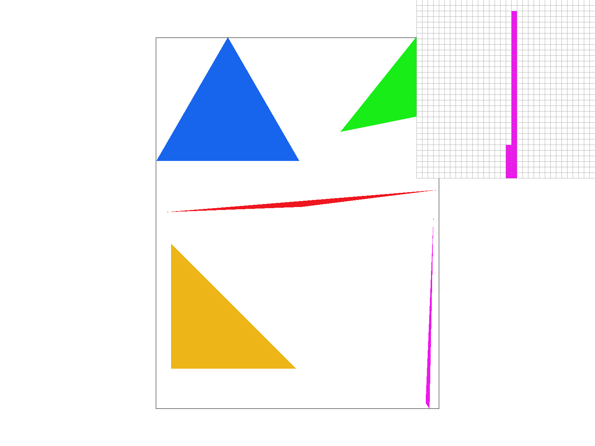
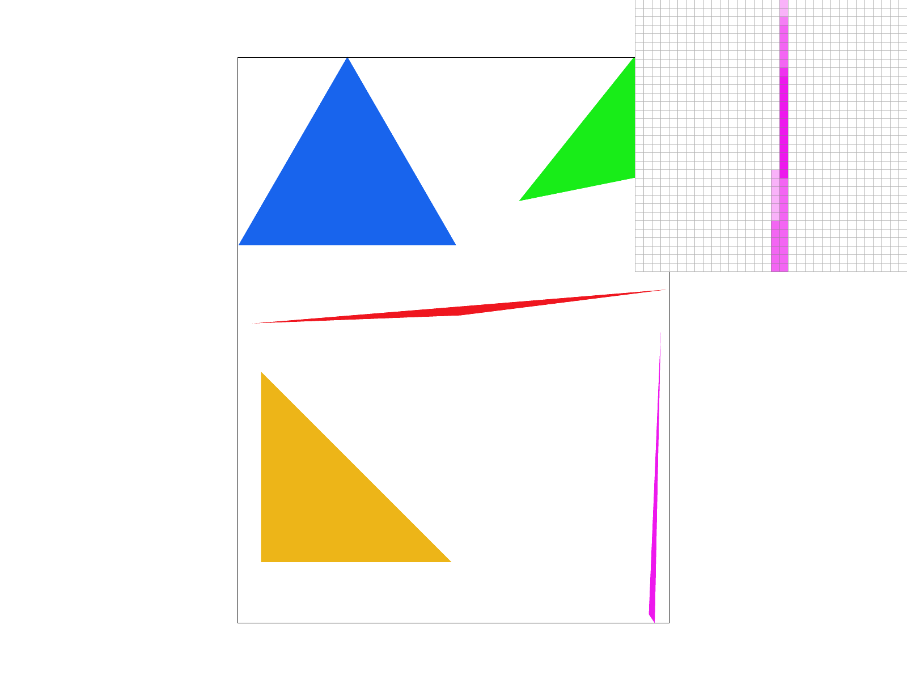

We were given the coordinates of the 3 vertices of the triangle. However, these weren’t ordered in the anticlockwise direction (which is important while calculating whether a point is inside or outside the triangle). To fix this, I first calculated the cross product of the two vectors of the triangle (p1 - p0, p2 - p0). If it was negative, I swapped p0 and p1. This was done using the following calculations:
if ((x1 - x0) * (y2 - y0) - (y1 - y0) * (x2 - x0) < 0) {
swap(x1, x2);
swap(y1, y2);
}
Next, I had to calculate the tightest bounding box the triangle resided in. To do this, I calculated 4 things:
Then, the bounding box would be the triangle residing in the rectangle with diagonal vertices (xmin, ymin) and (xmax, ymax). Next, I just iterated through all points lying within the bounding box using a nested for loop, calculating whether the center of the point (using the 0.5, 0.5 offset) was within the triangle. This was done using the line formula:
return -(x - x0)*(y1 - y0)+(y - y0)*(x1 - x0);
If it was within the triangle, I simply filled in the pixel at value (x, y) to color.
As mentioned above, my algorithm first calculated the tightest bounding box that fits the triangle (since all vertices lie on the edges of the bounding box). Then, I only iterate through the points that lie in this bounding box by setting my for loop conditions accordingly.
My supersampling implementation involved using the sample_buffer directly rather than fill_pixel. I started by computing the ‘gap’ between each evenly spaced point, which I found out to be 1/(sqrt(sample_rate) + 1). The number of sampling points in each row/column is sqrt(sample_rate), since they are evenly spaced.
After these values were computed, the rest of the work involved reshaping sample_buffer to always be of size height*width*sample_rate (so other functions that involved resizing to only width*height had to be updated), since now each pixel has to be the average of all sample points, of which there are sample_rate many. Therefore, one pixel is represented by sample_rate number of colors.
Further, if we are looking at the pixel (x, y) and want the (i, j) sample point within, we have to sample at (x + i*gap, y + j*gap). Since sample_buffer is 1-dimensional, the index of this was computed as:
sample_buffer[(y*width + x)*sample_rate + num*(i-1) + (j-1)] = color;
The algorithm simply goes through each sample point (through 4 for loops) as calculated above and does a check similar to task 1 to figure out whether the point is inside or outside the triangle. Then, sample_buffer is updated. Fill_pixel had to be modified to set not just one location of sample_buffer to color, but all samples of them (of which there are sample_rate many).
In the resolve_to_framebuffer function, I calculate the final pixel color to be the average color of the sample_rate number of sample points for that pixel in the sample buffer.
Supersampling is really useful to remove jaggies and aliasing since we are effectively increasing the sample rate. This leads to much smoother and less pixelated images. It helped antialias the triangles by smoothing out the edges, blending them better with the white background, thereby removing jaggies and fixing pointy edges (and just edges in general) as well.
More triangles rasterized with different super sampling rates
|

|
|
|

|
Barycentric coordinates are a set of coordinates used to represent a point inside a triangle using the triangle's three vertices as a reference. A point’s position is described as a weighted average of the vertices, where the weights (alpha, beta, gamma) sum to 1. These weights indicate how much influence each vertex has on the point’s location, allowing for easy interpolation of values like color or texture across the triangle. Within the triangle, these values sum up to one while outside, they do not.
The task first involved converting x, y coordinates in the mesh to u, v coordinates in the texture map that we wanted. To do this, we use barycentric coordinates to interpolate the value at an x, y position within the triangle given the u, v coordinates of the vertices. With calculated u, v coordinates for the desired point (after clamping to ensure it’s between 0 and 1), calculating texel values was straightforward.
we scale our u, v values to match the texture map size since u, v values are normalized. For sample_nearest, we merely get the texel that maps to this scaled u, v coordinate and return this color. This was done by rounding the scaled u, v values to the nearest integer. For sample_bilinear, however, we user linear interpolation to calculate the color by using a weighted blend of the nearest four texels neighboring. This was done using the following interpolation:
Color c0 = (1-s)*(mip.get_texel(u00.x, u00.y)) + s*(mip.get_texel(u10.x, u10.y)); Color c1 = (1-s)*(mip.get_texel(u01.x, u01.y)) + s*(mip.get_texel(u11.x, u11.y)); return c0*(1-t) + c1*t;
Here, we first we linearly interpolate the pair of texels with matching y coordinates and calculate the colors at these 2 points. Then, we interpolate along the y axis to merge these 2 colors into one.
code code code